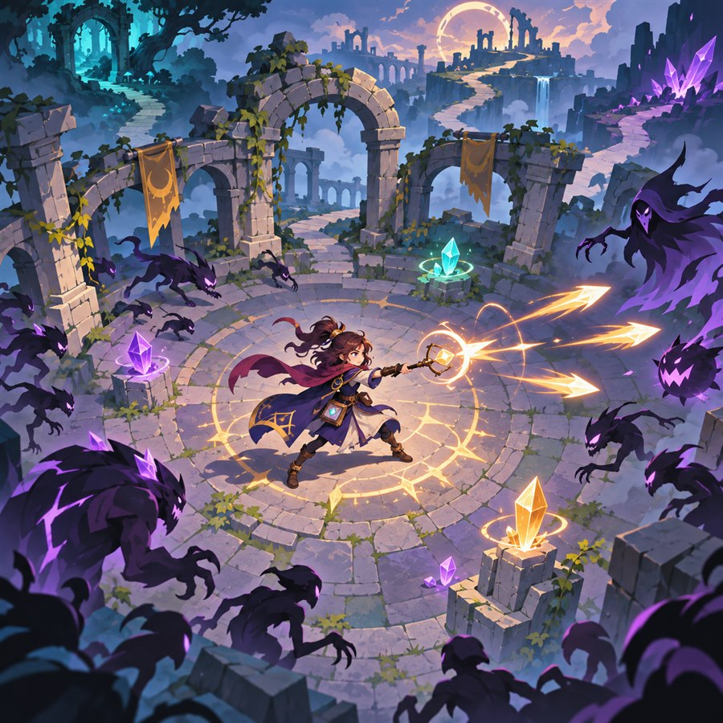
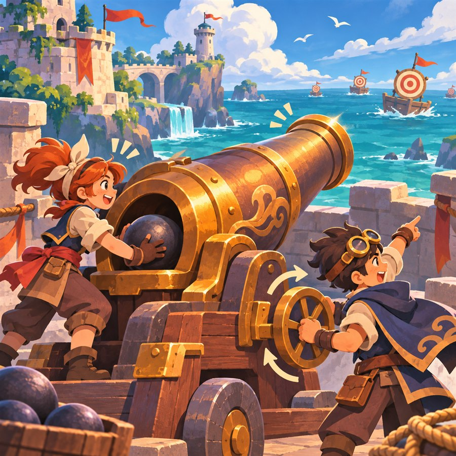
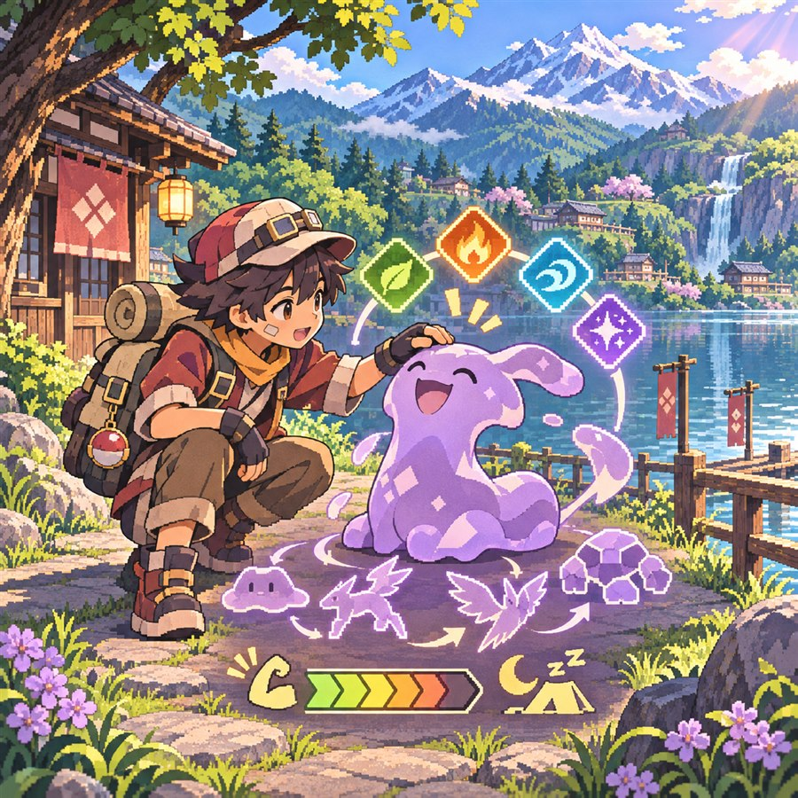
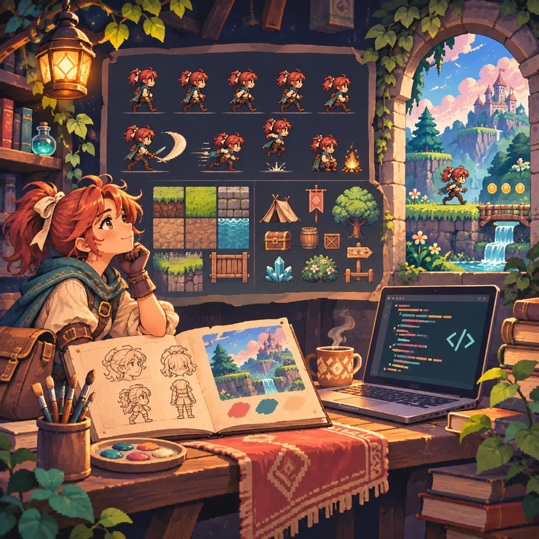
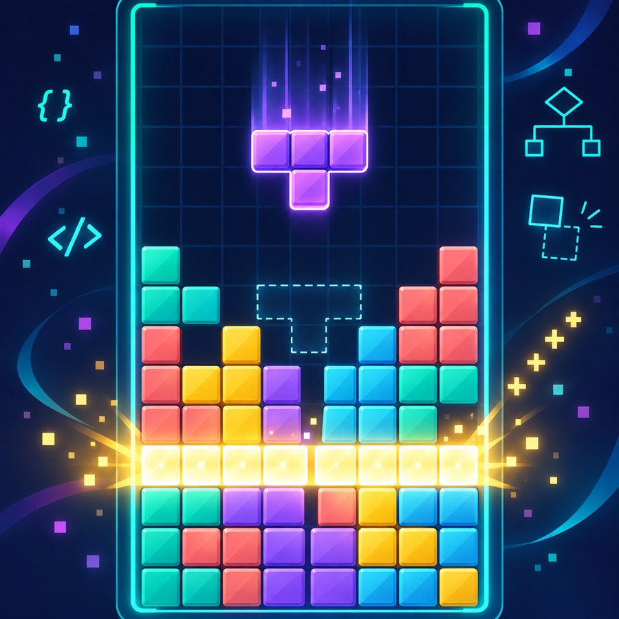
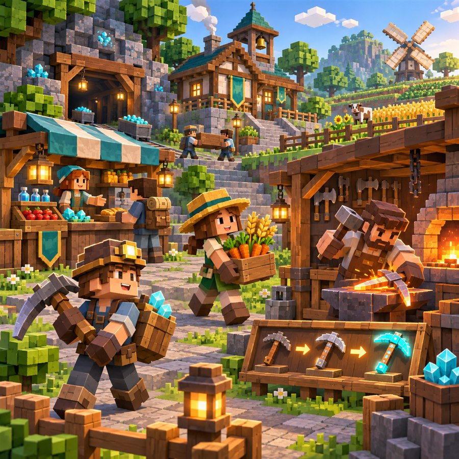

20222323 김서윤
컴퓨터공학 전공 · Unity 2D 게임 개발
컴퓨터공학 전공 · Unity 2D 게임 개발 Computer Engineering · Unity 2D Game Development






아이작의 로그라이크 요소와 뱀서류의 전투 방식을 참고해 만든 2D 게임입니다.
플레이할 때마다 다른 상황이 나오도록 랜덤 요소를 넣었고, 시스템 설계부터 빌드까지 개발 과정을 주도했습니다.
사용 기술: Unity 2D, C#, Animator, 2D Physics
구현 방법: 캐릭터 이동과 전투, 적의 등장, 게임 진행을 각각 C# 스크립트로 나누었습니다. 랜덤 요소는 한 판마다 전투와 성장 흐름이 달라지도록 구성하고, 여러 번 플레이하면서 난이도와 진행 속도를 조정했습니다.
2026년 5월 스마일게이트 인디고(IndieGo) 밋업에 전시해 현장 피드백을 받았습니다. 공모전에도 출품했지만 수상하지는 못했습니다.
A 2D game inspired by Isaac-style roguelike elements and survivor-like combat.
I led the work from system design through the playable build and added random elements so each run presents different situations.
Tech stack: Unity 2D, C#, Animator, 2D Physics
Implementation: Character movement and combat, enemy spawning, and game progression were separated into C# scripts. Random elements change the combat and progression flow between runs, and repeated playtests were used to tune difficulty and pacing.
The game was showcased at the Smilegate IndieGo Meetup in May 2026 and also entered in a competition, where it did not receive an award.
대포를 중심 소재로 삼은 협동 게임입니다. 여러 플레이어가 역할을 나눠 하나의 목표를 해결하는 경험을 만들고 있습니다.
사용 기술: Unity, C#, 2D Physics
구현 방법: 대포의 조작과 발사체 동작, 플레이어의 상호작용을 서로 분리해 구현하고 있습니다. 협동이 필요한 상황이 자연스럽게 생기도록 역할과 규칙을 정리하고, 플레이 테스트 결과에 따라 조작 방식과 난이도를 고치는 중입니다.
현재 개발 중인 프로젝트라 구현이 끝난 기능부터 차례대로 테스트하고 있습니다.
A cannon-themed cooperative game currently in development.
Players take different roles and work toward one shared goal.
Tech stack: Unity, C#, 2D Physics
Implementation: Cannon controls, projectile behavior, and player interactions are being implemented as separate systems. Roles and rules are designed to create situations that require cooperation, then revised through playtesting.
Completed features are being tested one at a time as development continues.
조토 지방을 배경으로 기획하고 있는 팬게임입니다.
메타몽을 중심으로 커스텀 기술 학습과 피로도 시스템을 구현해, 익숙한 포켓몬 게임에 새로운 성장 규칙을 더했습니다.
사용 기술: Unity 2D, C#, Tilemap, Animator
구현 방법: 기술 정보를 데이터로 관리해 플레이어가 원하는 기술을 선택하고 학습할 수 있도록 구성했습니다. 행동에 따라 피로도가 쌓이고 회복되는 흐름을 따로 계산해, 강한 기술만 반복해서 사용하는 플레이를 제한했습니다. 조토 지방의 맵은 Tilemap으로 구성하고 캐릭터 동작은 Animator로 연결했습니다.
A fan game set in the Johto region.
It adds new progression rules to the familiar Pokémon formula through a Ditto-focused custom move-learning system and a fatigue system.
Tech stack: Unity 2D, C#, Tilemap, Animator
Implementation: Move information is managed as data so players can select and learn custom moves. Fatigue is calculated separately as it rises and recovers, discouraging repeated use of only the strongest moves. The Johto map uses Tilemap, while character actions are connected through Animator.
캐릭터 스프라이트와 세부 에셋을 직접 제작하고 게임에 적용한 런앤건 프로젝트입니다.
사용 기술: Unity 6, C#, Animator, SpriteRenderer, Object Pooling, TextMeshPro
구현 방법: 방향키 입력을 정규화해 대각선 이동 속도를 일정하게 만들고, 마우스 위치를 월드 좌표로 바꿔 발사 방향을 계산했습니다. 적은 플레이어 방향을 따라 이동하며, 시간이 지날수록 생성 간격이 짧아지도록 구성했습니다. 총알과 적은 오브젝트 풀에서 재사용해 반복 생성과 삭제를 줄였습니다. 피격과 사망 상태는 머티리얼 변화와 Animator 트리거로 표현했습니다.
A run-and-gun project built with original character sprites and hand-made assets.
Tech stack: Unity 6, C#, Animator, SpriteRenderer, Object Pooling, TextMeshPro
Implementation: Directional input is normalized to keep diagonal movement speed consistent, and the mouse position is converted to world coordinates to calculate firing direction. Enemies track the player and spawn more frequently over time. Bullets and enemies are reused through object pools, while material changes and Animator triggers show hit and death states.
2D 게임의 기본 구조와 반복되는 게임 흐름을 익히기 위해 만든 프로젝트입니다.
Unity 6에서 블록 회전, 줄 제거, 충돌 판정과 점수 계산을 구현했습니다.
사용 기술: Unity 6, C#, Unity Input System, TextMeshPro, URP 2D
구현 방법: 10×20 보드를 2차원 배열로 관리하고, Board와 Tetromino 클래스를 분리해 블록 모양과 보드 상태가 서로 섞이지 않게 했습니다. 회전할 공간이 부족할 때는 주변 위치를 차례대로 검사하는 월 킥을 적용했습니다. 다음 블록, 홀드, 고스트 위치, 하드 드롭도 별도 로직으로 구현했습니다. 줄을 지운 수에 따라 점수와 레벨을 계산하고, 레벨이 오르면 블록의 낙하 간격이 짧아지도록 만들었습니다.
Windows 실행 파일로 빌드했으며 코드 변경 사항은 GitHub Pull Request로 관리했습니다.
A project created to study the core structure and gameplay loop of a 2D game.
Built with Unity 6, it implements block rotation, line clearing, collision detection, and score calculation.
Tech stack: Unity 6, C#, Unity Input System, TextMeshPro, URP 2D
Implementation: A 10×20 board is stored in a two-dimensional array, with Board and Tetromino classes separating board state from shape data. Wall kicks test nearby positions when a rotation is blocked. Next piece, hold, ghost position, and hard drop use separate logic. Scores and levels are calculated from cleared lines, and the fall interval becomes shorter as the level increases.
I produced a Windows executable and managed code changes through GitHub pull requests.
친구들과 함께 플레이하기 위해 직업 성장, 장비 강화와 상점 기능을 구성한 서버입니다.
직접 플레이하며 하위 장비의 강화 효율이 상위 장비를 따라잡는 문제를 발견했고, 등급별 효율 범위를 나눠 성장 순서를 바로잡았습니다.
사용 기술: Minecraft Java 서버, Java 기반 플러그인, 명령어 GUI, 설정 데이터
구현 방법: 채굴과 수확 같은 직업별 행동을 감지해 경험치를 지급하고, /직업 화면에 레벨업 방법을 표시했습니다. 장비는 등급마다 효율 범위를 따로 두어 강화한 하위 장비가 상위 장비의 기본 성능을 넘지 않게 했습니다. 대장간에는 내구도 수리 기능을 추가하고, 플레이어 수입을 기준으로 강화 비용과 상점 가격을 조정했습니다.
필요한 기능과 수정 방향은 제가 정했으며 서버 코드 작성과 수정에는 AI의 도움을 받았습니다.
A survival economy server built for playing with friends, featuring job progression, equipment upgrades, and shops.
During playtesting, I found that upgraded lower-tier tools could catch up with higher-tier tools, so I separated efficiency ranges by tier to restore the intended progression.
Tech stack: Minecraft Java server, Java-based plugins, command GUI, configuration data
Implementation: Job-specific actions such as mining and harvesting grant experience, while the /직업 screen explains how to level each job. Equipment tiers use separate efficiency ranges so an upgraded lower-tier tool cannot surpass the base performance of a higher tier. I also added durability repair at the blacksmith and adjusted upgrade costs and shop prices around player income.
I defined the needed features and revision goals, while using AI assistance for parts of the server code.